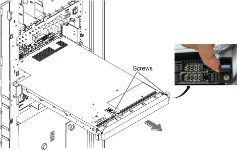
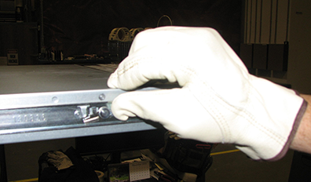

Open the Power, Gradient, RF cabinet (PGR) front door.
Loosen two captive screws under the screw cover.
Slide the ICN out of the cabinet until the ends of the rails touch the stoppers.
Figure 1. Slide the ICN out

Disconnect all the cables from the rear of the ICN, including the AC power plug(s). Note the locations of all the cables. The location information will be helpful when reinstalling the existing ICN or installing an upgraded ICN.
Push the two release tabs down and move the ICN forward.
Figure 2. Slide the rails and release the tabs

Lift the ICN up to release it from the bracket.
There are four studs on each side of the ICN that fit into the rail.Figure 3. Remove the ICN from the rails